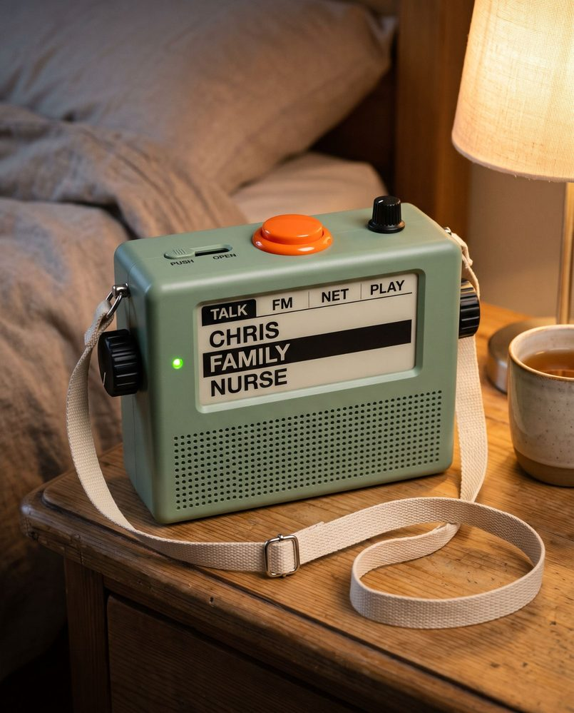

Hold to talk.
Let go to listen.
Mobile phones can be tricky for older people. Small icons, passcodes, updates and menus get in the way of reaching the people they love. So we're building Pop a radio with one big orange button. It reaches the family over Wi-Fi, in the next room or the next town.
It is not an emergency alarm. In an emergency, call 111.

Have a go
Hold the orange button (or the space bar) to talk. Turn the knobs, slide the switch, or have Chris call in. Turn your sound on.
Hold the button below, or hold the space bar.
What's on it
- 1The orange button
Hold it to talk. It chirps when it's ready, so the first word isn't lost. - 2The right-hand knob
Picks who you're talking to. Each click says the name out loud. Press it to hear the last message again. - 3The left-hand knob
Picks what the radio is doing. It starts on Talk, and for Pop it can stay there. The rest is further down. - 4The screen and light
What it's doing along the top, who you'll reach below, and one big word when something happens: TALK, LISTEN, WAIT or OFFLINE. The light is red whenever the microphone can hear. - 5The PUSH / OPEN switch
PUSH is a normal walkie-talkie. OPEN lets you talk hands-free, taking turns. More on that below. - 6The small knob on top
Volume. Press it to pause a game.
The sounds here are rough versions made in your browser. Spoken names use your browser's voice.
Why it looks like this
A radio you can't knock over, with controls big enough to find without looking.

- Low and wideIt gets pressed on top, turned from the sides and picked up by a strap, so it's wider than it is tall. Pressing the button pushes it down, not over.
- The button is the biggest thing on topIt's where a hand lands. The volume knob beside it is small on purpose.
- Knobs for a whole handAbout 40 mm across with deep ribs, for stiff fingers or a weak grip. They turn freely, and each one is also a button.
- A switch you can feelIt slides, and sits hard against one end or the other, so you can tell which way it's set in the dark.
- A strapLong enough to go over a shoulder, so the radio can move from the bed to the garden.
The sizes are first guesses. They get tried as a cardboard mock-up before anything is printed.
Two ways to talk
A switch on top sets how the radio talks. Holding a button down is fine for a quick message, but harder for a long chat or for stiff hands. So the radio gets a second way.
Like a walkie-talkie
Hold the button, talk, let go. The microphone only hears you while the button is down. This is how it starts out of the box.
Hands-free, taking turns
Slide the switch and just talk. It sends when you speak and goes quiet when you stop. When Chris talks back, you hear them. The red light stays on the whole time, so you know it can hear you.
| PUSH | OPEN | |
|---|---|---|
| Microphone on | Only while the button is held | Whenever the switch is on OPEN. Red light on. |
| Who can talk | One at a time | One at a time, swapping by itself |
| Who hears | Whoever the knob is on | Whoever the knob is on, groups included. The knobs are locked while it's open. |
| Off the stand | 4 to 9 days | About a day if mostly quiet, about 4 hours of solid talking |
| Data | Only when someone talks | Only when someone talks. Silence sends nothing. |
Battery figures are estimates for the simpler build, with a 1000 mAh battery.
The thinking behind the switch
A switch, not a setting
You can see and feel which way it's set, even in the dark. Nobody can change it from somewhere else. That's the main reason for a physical switch.
Taking turns, not a phone call
While Chris is talking, Pop's microphone is muted so the speaker doesn't echo back down the line. A true two-way call needs echo cancelling, which takes about a third of the chip and probably a different sound board. That can come later.
The red light rule
If the red light is on, the microphone can hear. In OPEN it stays on, the screen says OPEN, and Chris's radio shows that Pop's channel is open.
It says what it's doing
Slide to OPEN and it says who can hear, such as "Channel open to family. Everyone on this channel can hear you". Slide back and it says "Channel closed".
Groups too, with care
OPEN works on a group channel, so the whole family can chat hands-free. Everyone on that channel hears what the microphone picks up, so the radio names the channel out loud first, and every other radio on it shows that Pop's is open. The knobs lock while it's open, so an open microphone can't be turned onto another channel by accident.
It pauses itself
After ten minutes of nobody talking, it pauses and says so. Press the orange button to carry on. Pressing it any time in OPEN pauses or resumes.
Best on the stand
In OPEN the radio has to stay fully awake, so the battery goes in hours rather than days. It's meant for when it's sitting on its stand.
Pop decides
It's his radio and his switch. We explain it, ask him, and ask again later. The printed card says what the red light means.
More than a radio
A speaker, a screen, knobs and Wi-Fi are most of what a bedside radio, a chess clock and a games board need too. So the knob on the left picks what the radio is doing. Talk is the plan. The rest are ideas, and none of them is tested.
Chris, Family, Nurse. The walkie-talkie, and where the radio always goes back to.
Ordinary radio, on three stations the family sets up. It needs no internet.
Internet radio, for stations FM can't reach. A station from home, for someone who moved countries.
Pong and pinball with a knob in each hand, and a chess clock you tap with your palm.

A chess clock
It stands beside the board. Each player taps the orange button to end their turn. Holding it still talks.

A games board
A knob in each hand. Lay it on its back with the screen facing up and two people can play, one knob each.

A radio in the garden
The right-hand knob picks the station, the same way it picks a person.
Holding the orange button always talks
Whatever the radio is doing. The station fades or the game waits, and it talks to whoever he last talked to.
The family comes first
A message from the family stops the game or the station, plays, then hands back.
The family chooses
Each of these is switched on from the family's phones. A radio can be Talk only, and then the left-hand knob does nothing at all.
Other shapes we looked at
The same insides fit other cases. These came first, and any of them could still be built. They are generated concept pictures too.

The first bedside radio
Where we started: one knob, a small screen and a toggle switch on a sloped front.

Classic handheld
The walkie-talkie shape everyone already knows. Good for carrying round the house.


Pocket pebble
Small enough for a pocket, with a clip on the back and a loop for a lanyard. The knob is a ring around the button.
What's inside
One small ESP32 chip does the work: Wi-Fi, squeezing the voice down, and locking it so only our radios can hear it. Everything else is a handful of cheap parts. Tap a part to find it in the picture.
These are the parts and prices for the first, simpler radio: one knob and Talk only. The design at the top of the page adds two knobs, an FM tuner, a tilt sensor and a bigger screen, and isn't priced yet.

Fig. 3 The parts for one radio. A generated reference picture, not our actual kit. The orange button appears twice, side on and from above.
Or about NZ$25 to 30 without a battery, if it never leaves its stand. Prices are November 2026 search prices including GST, not quotes. Shipping is extra.
How it adds up
Mouth to ear, through the service and back. A little more on mobile data. Emergency-service radio networks measure about 0.4 s.
With 20 minutes of talk a day on a 1000 mAh battery. The R1 manages about a day and a half.
Running a channel costs a dollar or two a year. Each set comes with its channels, paid for life.
For 20 minutes a day. Only matters on a SIM card; at home it uses the Wi-Fi.
Estimates from our research. Real figures get measured on the bench.
How we get there
First we prove the idea on hardware we already own. Then we build our own radio. The extras come after that, if they earn their place.
The card that comes with it
Printed and kept beside the radio.
Your radio
- To talk: hold the orange button, wait for the chirp, then talk. Let go when you've finished.
- To listen: you don't need to do anything. It clicks, then you hear them.
- To choose who: turn the knob on the right. It says the name out loud.
- To hear the last message again: press the knob on the right.
- Too loud or too quiet: turn the small knob on top.
- To talk without holding the button: slide the switch to OPEN. The red light means it can hear you. Slide it back to PUSH to stop.
- Lost? Hold the knob on the left until it says "Talk".
Keep it on its stand so it stays charged.
This is not an emergency alarm. In an emergency, call 111.
Questions
Is it an emergency alarm?
No. In an emergency, call 111. The radio has no Help or SOS button. If Pop lives alone or is frail, it sits alongside a monitored medical alarm, not instead of one.
Is "Nurse" a call bell?
No. In a rest home, Nurse could be a channel to the nurses' station, beside Chris and Family. It's an ordinary channel for talking, so someone has to be listening at the other end. It doesn't replace the home's call bell.
Can anyone listen in?
No. Each message is locked on the radio and only unlocked on the other radios. The service in the middle passes messages on but can't open them. The microphone only hears while the button is held, or while the switch is on OPEN with the red light on. There's no way to switch it on from somewhere else.
Why not just buy a pair of walkie-talkies?
If you live within a kilometre or two, a pair of licence-free UHF radios for about $80 is simpler. They fall down on distance, hills, privacy (anyone can tune in), replaying missed messages and telling family when the battery is low.
What's the Rabbit R1 got to do with it?
The R1 is a small gadget that happens to have a button, a wheel, a speaker and Wi-Fi. We already own two, so they're the quickest way to test the idea with Pop. Rabbit has stopped making them and the battery is short, so it isn't the final radio.
Can more of the family join?
Yes. Each channel can hold several radios, and the right-hand knob picks the channel. OPEN works on group channels too: everyone on the channel can then hear, and still only one person talks at a time.
Will it really play the radio and games?
Maybe. Those are ideas we're exploring, not promises. They only go ahead if Pop wants more than Talk, and the family can leave them switched off. Whatever the radio is doing, holding the orange button still talks.